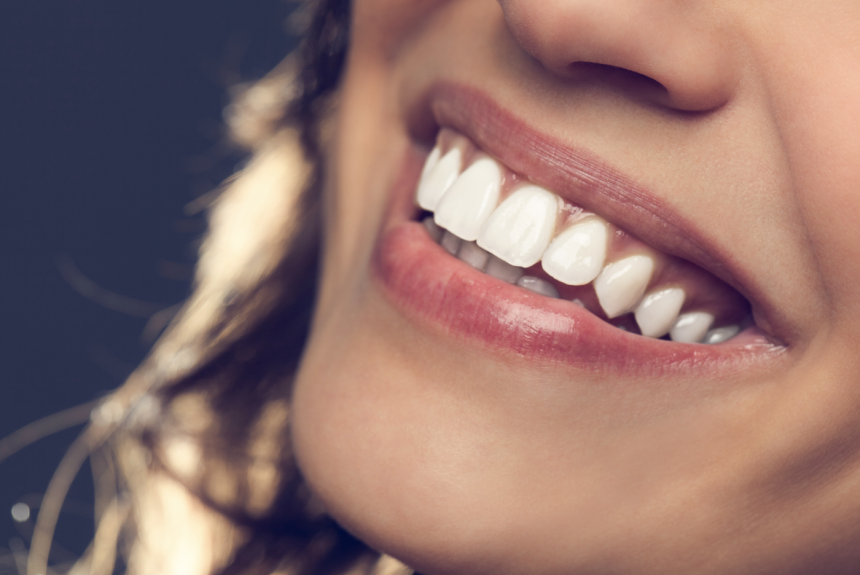
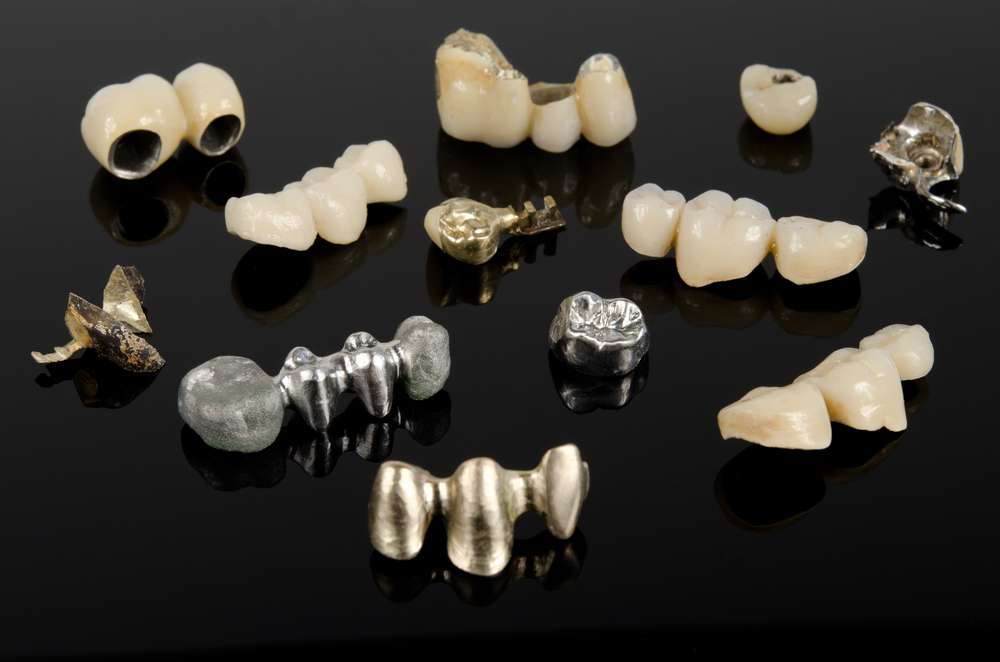
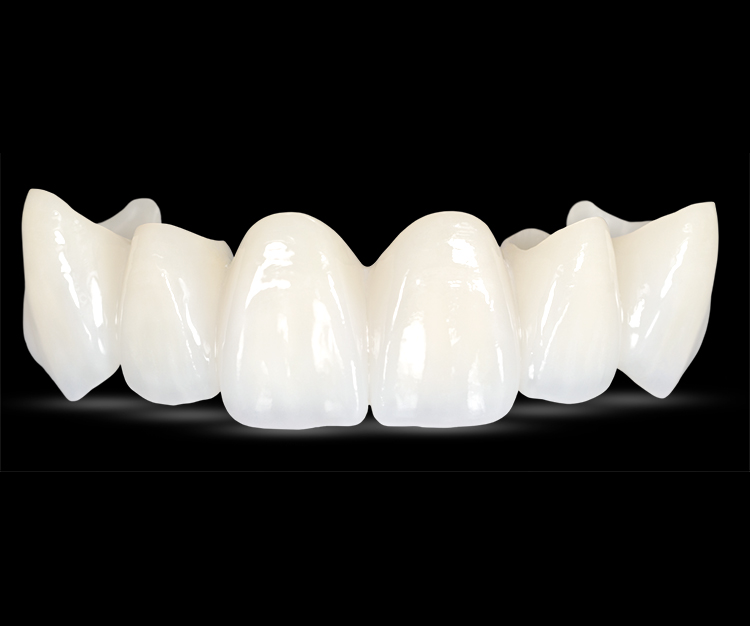
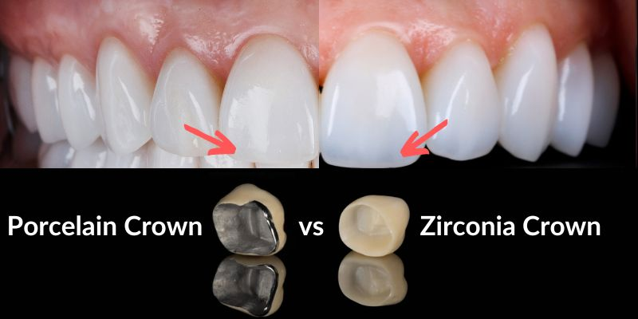

Crowns & Bridges
Crowns are used to restore missing or damaged teeth, enhancing both function and aesthetics. They can be crafted from various materials, including gold, metal, porcelain, and tooth-colored zirconium. White zirconium crowns, in particular, offer a natural appearance, boosting confidence and improving your smile.
Ceramic Fused to Metal Crowns
Porcelain-fused-to-metal (PFM) dental crowns feature a metal base for strength and a porcelain overlay for a natural appearance. Unlike metallic crowns, they can be color-matched to adjacent teeth. However, over time, the porcelain layer may wear down, and the metal beneath can become visible, sometimes appearing as a dark line near the gums. As a result, PFM crowns may require replacement or upgrading after several years.
All Ceramic crowns
All-ceramic or all-porcelain dental crowns offer the best natural color match compared to other crown types, making them an ideal choice for front teeth. Additionally, they are a great option for individuals with metal allergies, ensuring both aesthetics and biocompatibility.
Zirconium crowns
Zirconium is the strongest all-ceramic material available today, making it an excellent choice for those with metal sensitivities or those seeking aesthetically superior, metal-free restorations. Its biocompatibility has been well-established in the medical field over the years. Zirconium crowns and bridges are exceptionally durable and can be used in any area of the mouth. They can withstand the biting pressure of both front teeth and the grinding forces of back teeth. Their natural appearance closely mimics real teeth, making them a highly desirable option in modern dental treatments.
Procedure
Restoring the functionality of your teeth typically requires three appointments:
- First Appointment: Your teeth will be carefully shaped as needed, and precise measurements will be taken to ensure a perfect fit for your new crowns.
- Second Appointment: A trial fitting of your crowns will be conducted to assess their functionality and aesthetics. Any necessary adjustments will be made at this stage to enhance comfort and appearance.
- Third Appointment: Your customized crowns will be securely fixed, restoring your smile and bite to optimal function.
Crown or bridge they follow the same procedure.
Time Taken
Whether it is a single crown or a full-mouth bridge, the entire process is usually completed within a week.
Treatment Charges
Metal based crown can vary from Rs4,000 to Rs7,000
Cad- Cam Crowns from Rs7,000 to Rs14,000
Metal free crowns from Rs10,000 to Rs14,000
FAQ's
What are Crowns and Bridges?
When a tooth is malformed, severely decayed, cracked, or broken, it can be restored with a crown. A crown is a fixed prosthetic device designed to protect the tooth from further decay and provide strength to the remaining tooth structure, allowing it to function properly. Bridges, on the other hand, are used to fill the gaps left by one or two missing teeth, supported by the adjacent healthy teeth. Both crowns and bridges not only restore the functionality of the teeth but also enhance their appearance.
Does Crown and Bridges make your teeth weaker?
Crowns and bridges do not weaken your teeth; in fact, they strengthen them by protecting against further decay and potential damage. Decayed teeth are often brittle and can easily chip or break, posing a risk. By placing a crown around a weakened tooth, it adds stability and strength, preventing it from further deterioration and ensuring its functionality.
Are dental crowns and bridges permanent or temporary?
Dental crowns and bridges offer a permanent solution to dental issues and can last anywhere from 10 to 20 years, depending on the quality of the materials used. Higher-quality crowns tend to last longer, while lower-quality crowns can be upgraded over time if necessary. Maintaining excellent oral hygiene is crucial to prolonging the lifespan of crowns and bridges, ensuring they continue to function and look their best for many years.
What are the different types of crowns offered?
At ARS Innovative Dental Solutions, we offer two types of CAD CAM crowns:
Zirconia/E-max Crowns: These are the latest superior quality, metal-free crowns. They provide exceptional strength and a natural appearance, making them ideal for both aesthetics and durability.
Laser Sintered Crowns: These crowns feature a unique design with an inner core made of metal that is laser sintered onto the die to maintain minimal metal thickness. The outer layer is made of tooth-colored ceramic, offering a blend of strength and aesthetic appeal.
Which Crown Material is recommended?
Zirconia is the preferred material for dental crowns due to its metal-free composition, making it highly biocompatible. Unlike metal crowns, Zirconia allows the gums to naturally grow over it, giving it a more aesthetically pleasing appearance. Additionally, Zirconia helps prevent gum recession over time, a common issue seen with metal crowns.
Is maintenance of Dental Crown easy?
Yes, maintaining crowns and bridges is simple and no different from your regular oral hygiene routine! Just continue brushing, flossing, or using interdental brushes, and make sure to keep up with your regular check-ups at Chisel Dental Clinic. Apart from this, no special maintenance is needed.
Do Crowns and Bridges Stain?
No! They never stain. Crowns and bridges have a polished surface, making them resistant to staining. You can have any kind of food without having to worry about getting your teeth stained!
Is getting Crown and Bridges a painful procedure?
The procedure is completely pain-free once the local anesthesia takes effect. After the anesthesia is administered, you will experience numbness, ensuring that the entire procedure is comfortable and painless.